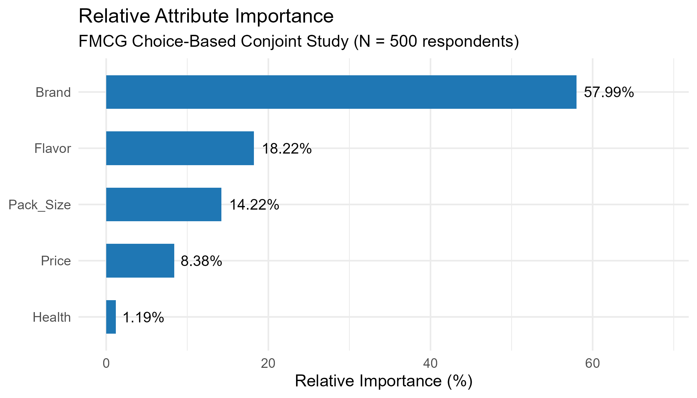
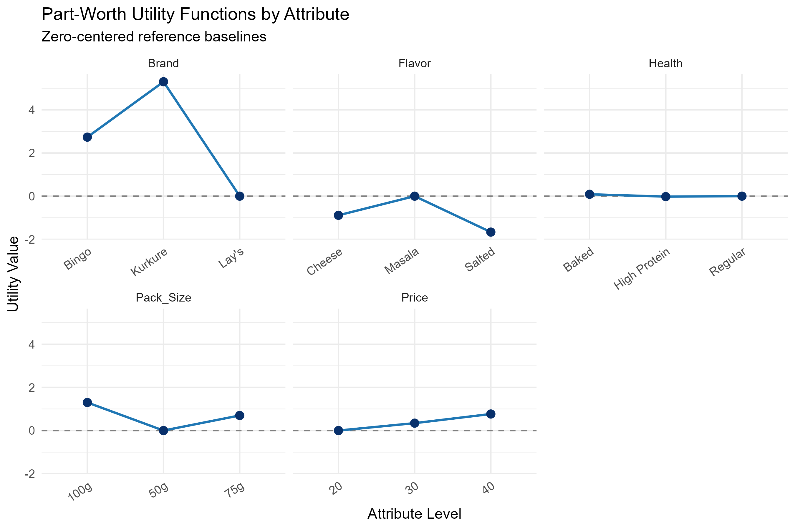
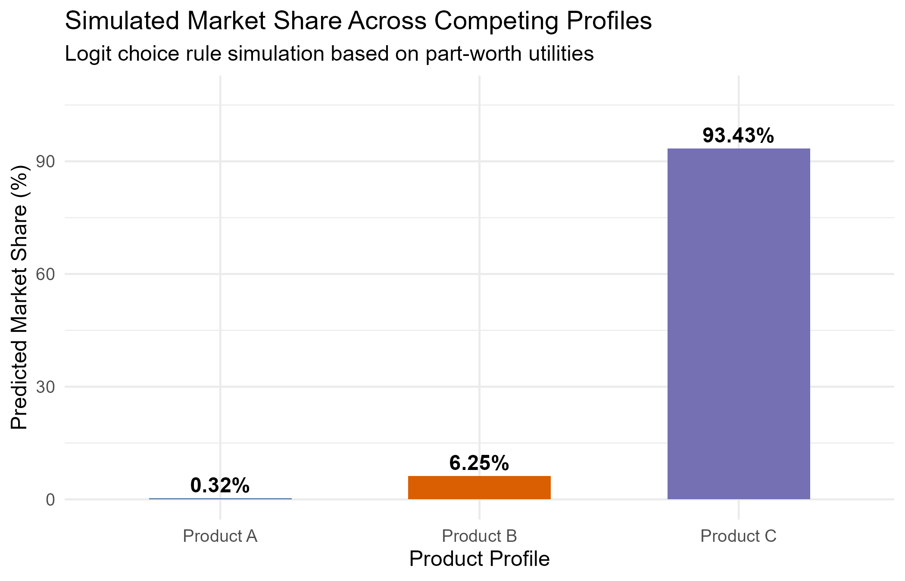

Conjoint Analysis
THE PROBLEM
Snack brands juggle brand name, flavor, pack size, price and health positioning when designing a new SKU, but stated preference surveys ("what matters to you?") rarely reveal what consumers actually trade off when forced to choose between real, competing products. Without that, pricing and portfolio decisions end up guessing at which attributes truly move the needle.
SOLUTION
I ran a choice-based conjoint (CBC) study across 500 respondents in the FMCG snacking category, covering five attributes — Brand, Flavor, Pack Size, Price and Health positioning. From the choice data I estimated part-worth utilities for every attribute level, derived relative attribute importance, and simulated market share for competing product profiles using a logit choice rule.
APPROACH
Respondents were shown repeated sets of hypothetical snack profiles (varying Brand, Flavor, Pack Size, Price and Health claims) and asked to pick their preferred option. I fit a choice model to recover zero-centered part-worth utilities for each attribute level, converted the utility ranges into relative importance scores, and used the estimated utilities to simulate predicted market share for three competing product profiles under a multinomial logit rule.
BUSINESS INSIGHTS
- Brand dominates the purchase decision (57.99% relative importance) — more than three times the next-ranked attribute. Kurkure and Bingo carry substantial positive utility over Lay's (the reference level), so brand equity, not price or flavor, is the primary lever for winning share in this category.
- Flavor is the second lever (18.22%), but only Masala is competitive with the baseline; Cheese and Salted both carry negative utility. New product development should prioritise Masala-led variants over Cheese or Salted line extensions.
- Pack Size matters more than Price (14.22% vs 8.38%). The 100g pack carries the highest utility, meaningfully ahead of 75g and 50g — consumers respond more to "more product" than to a lower price point, so larger formats are a stronger share driver than discounting.
- Price shows a mild positive utility as it rises from ₹20 to ₹40, suggesting a modest quality-signalling effect rather than pure price sensitivity in this range — consumers are not simply choosing the cheapest option, so aggressive discounting is unlikely to be the most efficient share-growth lever.
- Health positioning is nearly irrelevant to choice (1.19% importance), with Baked, High Protein and Regular claims producing almost identical utility. "Healthier" claims alone are unlikely to justify a price premium or reformulation cost unless paired with a strong brand and flavor.
- Market simulation confirms brand-led dominance: the profile combining the strongest brand and flavor levels (Product C) captures a projected 93.43% share against just 6.25% and 0.32% for the weaker profiles — reinforcing that a strong brand paired with the right flavor overwhelms price and health-based positioning.
- Recommendation: prioritise brand-building and Masala-led flavor innovation in larger pack formats over health claims or price cuts; use small price increases to signal quality rather than compete purely on discounting.
TOOLS USED
- R / ggplot2
- Choice-Based Conjoint (CBC)
- Part-Worth Utility Estimation
- Logit Market Share Simulation


